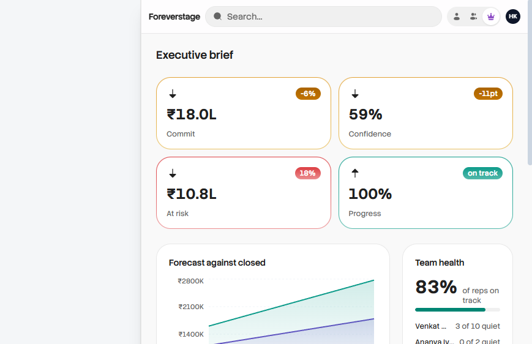
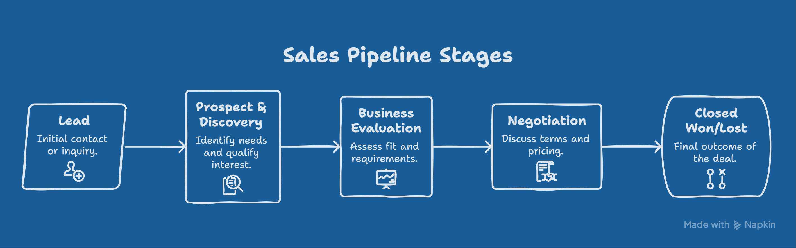
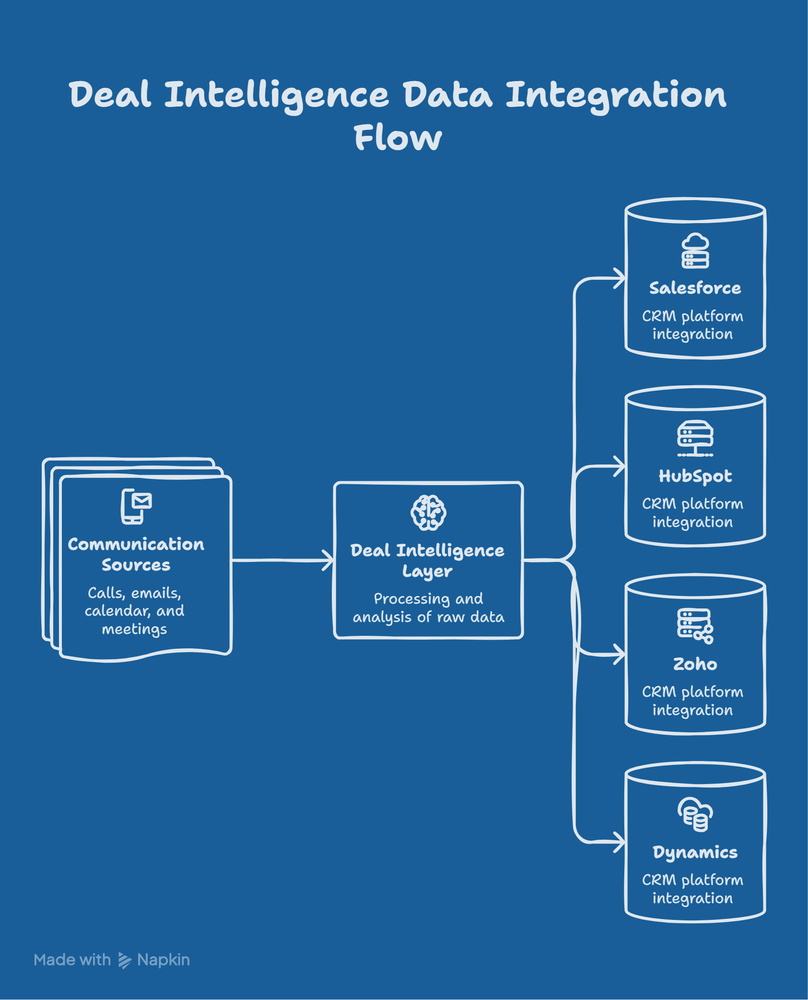
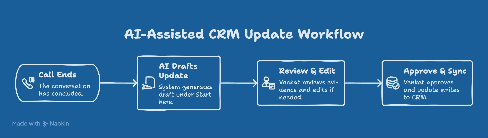
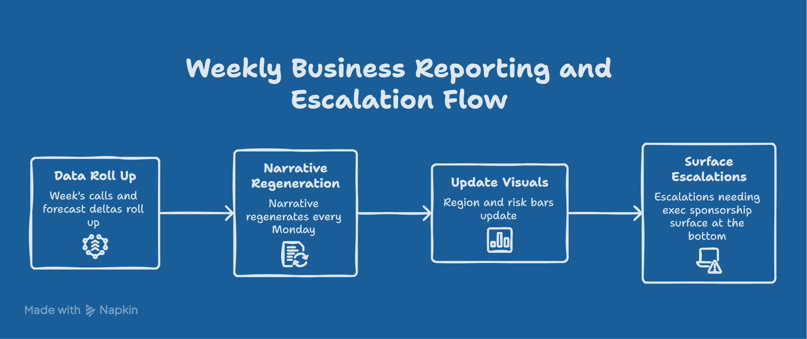
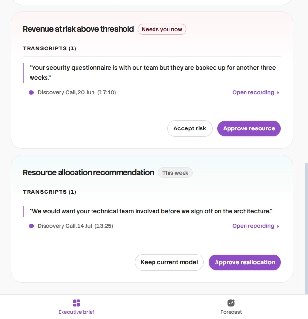
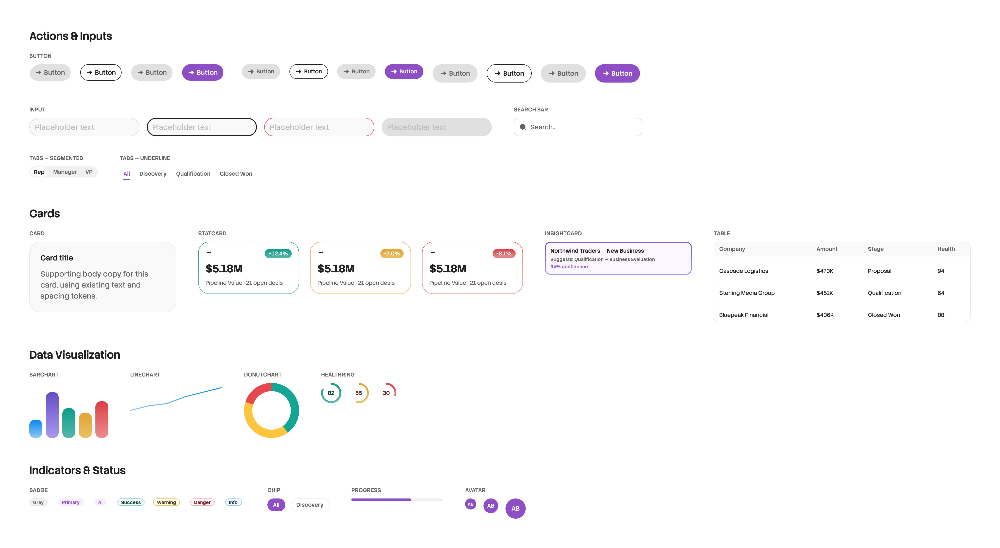
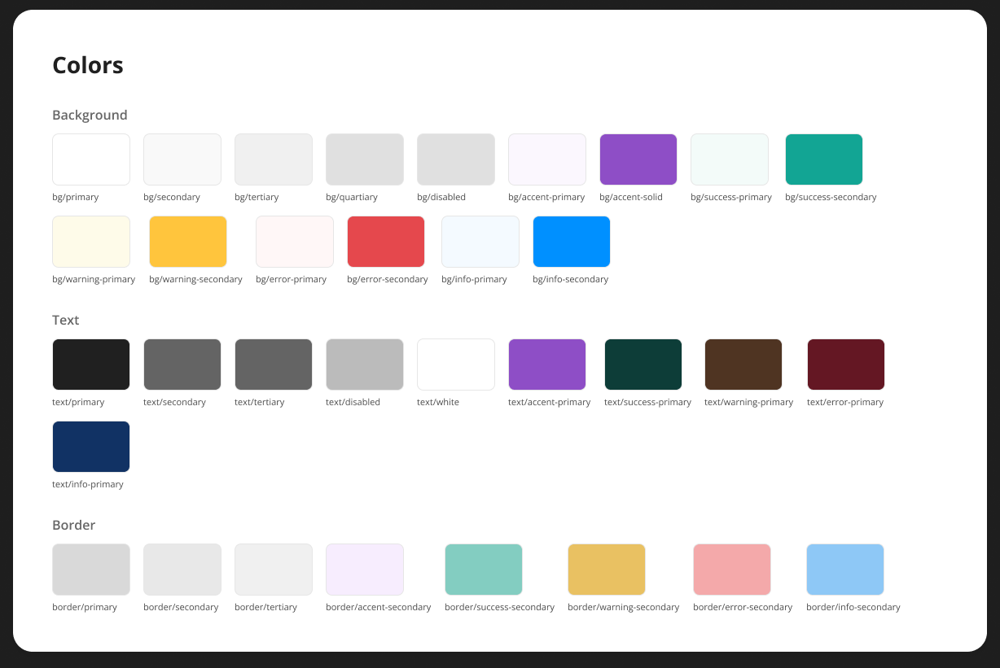
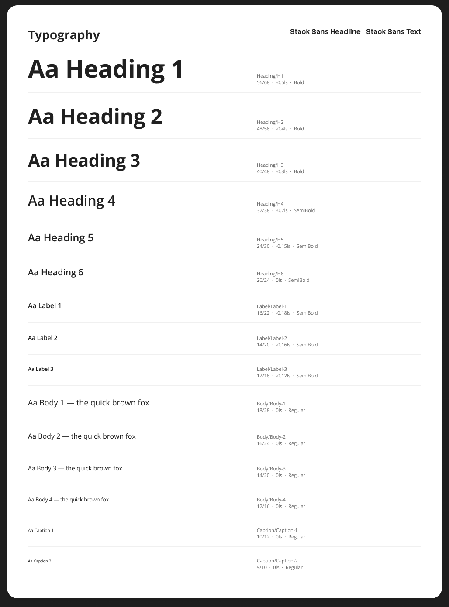
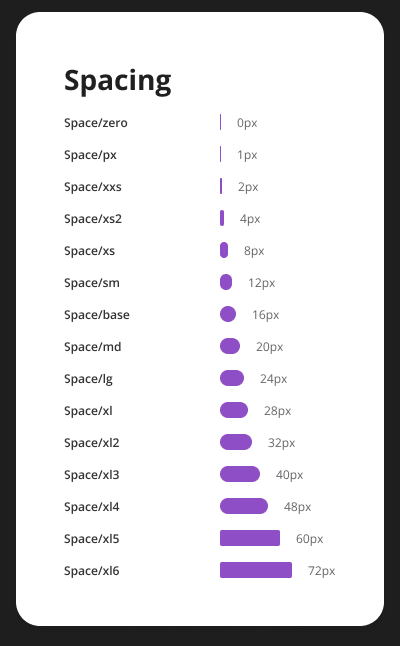

Foreverstage - Deal Copilot
{kind=link}

Thank you for giving me the opportunity to work on this assignment.
Before I even opened Figma, I wanted to actually understand how a 60 person sales team works day to day, not just guess at it. I dug into Salesforce and HubSpot and their AI features, poked around a few marketplace extensions, and spent time with conversation intelligence tools like Gong, Fireflies, and Fathom. I also thought back to a workflow I'd seen play out at a previous company.
Understanding the people behind the process
Instead of trying to map a 60 person sales org, I narrowed the problem down to a single reporting chain: one rep, one manager, one VP. That made it much easier to see how information actually moves from a customer conversation up to leadership.
It's not the whole organisation, just a thin slice of it. But the same pattern repeats across every rep and every manager in the company.
Meet Venkat, Sales Representative
It's 5:45 PM and Venkat has just finished his eighth customer meeting of the day.
One prospect is excited and asking about pricing. Another has just brought a competitor into the conversation. A third has pushed the decision out to next month because procurement isn't ready yet.
Venkat remembers all of it clearly; none of this is a memory problem.
It's a time problem. He still has follow-up emails to send, tomorrow's meetings to prep for, a commute home, and somewhere in there, the CRM to update.
Salesforce's own research puts the number at around 30%: that's roughly how much of a rep's time actually goes toward selling, with the rest eaten up by admin and internal work.
The CRM update matters, everyone knows that. But it never feels as urgent as the next deal in front of him. So it gets pushed. Sometimes to tomorrow. Sometimes it just never happens.
Meet Prashant, Sales Manager
Prashant isn't selling every day anymore. His job has shifted toward coaching the team, reviewing deals, clearing blockers, and keeping the pipeline healthy enough to hit the quarter's number.
The problem is, he only knows what actually makes it into the CRM.
If Venkat forgets to log that a competitor showed up in yesterday's call, Prashant has no way of knowing. If a customer quietly pushes their implementation date during a call and nobody types it in, Prashant keeps assuming the deal is on track.
Bit by bit, his job stops being about coaching and turns into chasing people for updates instead.
Meet Hari, VP of Sales
Hari doesn't care about any single meeting. He's looking at the bigger picture: which deals are slipping, where revenue is genuinely at risk, whether this quarter's forecast can actually be trusted.
For all of that, he depends on managers like Prashant to have the right answers.
And by the time anything risky actually reaches him, it's usually stale already.
Forecasting doesn't break because people aren't trying hard enough. It breaks because information moves slower than the decisions that depend on it.
Understanding the Sales Process
Before designing anything, I wanted to understand how a B2B sales team actually moves a deal forward, not guess at it. I'd worked around sales workflows before, but never done the job myself, so I spent about 15 minutes on a call with someone who works in B2B SaaS sales. That one conversation reframed the entire problem for me. I'd assumed this was about reducing CRM updates. It's not; CRM updates are just the visible tip of a much longer journey, where every conversation nudges an opportunity through a fairly structured pipeline:
{kind=link}

Each stage shift is triggered by something that happened in a real conversation: a new stakeholder joining, a competitor showing up, procurement stalling. None of it matters for forecasting unless someone captures it, and that's exactly where the friction starts.
Design Thinking & Decisions
Before getting into the actual solution, I want to walk through the questions I asked myself along the way, the ones that shaped scope, users, and where AI should and shouldn't be involved.
1. What is my understanding of the problem?
I started out thinking this was a CRM adoption problem, but that doesn't hold up once you look at what's already out there. Gong, Fireflies, Fathom, Agentforce have all solved note-taking and CRM sync already, and the pain is still there. So really, this is a timing problem. The information's already out there, it just doesn't reach the right person fast enough.
2. What assumptions am I making?
I'm assuming the company keeps whatever CRM they're already on; this sits alongside it, not instead of it. Reps are optimising for selling, not paperwork, so anything that adds to their plate just won't stick. Managers want the short version, not a full transcript, and leadership just wants to know if the forecast can be trusted.
3. What am I solving, and what am I leaving out?
I picked four things to focus on: pulling details out of conversations automatically, letting AI draft the CRM update instead of the rep typing it, only pinging managers when something actually needs their attention, and catching risk early instead of finding out in the forecast call. Everything else, coaching, outbound, pricing, replacing the CRM itself, I left alone on purpose. Better to nail one thing than half-do five.
4. Where does AI help, and where could it get in the way?
AI's good at the boring stuff: summarising, pulling out action items, flagging when a competitor comes up. None of that needs real judgement. What it shouldn't touch is anything that moves the needle: changing a stage, locking a forecast number, sending an email without someone checking it first. Every suggestion needs a paper trail back to where it came from.
5. What trade-offs did I make?
I picked suggestions over full automation, because a wrong auto-update is worse than one extra click. I picked fewer, more meaningful alerts over flooding managers with every update. I kept it inside the CRM instead of building a separate app, since that's where reps already live. And I leaned on explainability over anything that felt like a black box, since in enterprise software, that's what actually gets people to trust it.
Product Vision
Instead of replacing Salesforce, HubSpot, Zoho or Dynamics, I designed this as a Deal Intelligence Layer that integrates with whatever CRM a company is already using. It listens to customer conversations, understands commercial context, prepares CRM updates for human review, and delivers role specific intelligence across the sales organisation.
From Conversation to Deal Intelligence
Every customer conversation carries real business context, but most of it stays stuck inside a call, an email thread, or just in the rep's head. Instead of building another tool, I designed an AI layer that sits inside the existing CRM and works quietly alongside how the sales team already operates. The point is simple: cut manual reporting, and get the right information to the right person at the right time.
{kind=link}

Rep, then AI, then CRM
- Venkat takes the call, whether it's Zoom, Meet, or whatever the team's using
- AI transcribes it in the background as it happens
- It links the conversation to the right account, opportunity, and stage automatically
- It pulls out what actually matters: where the deal stage is moving, how sentiment is shifting, any competitor that got mentioned, who the champion is, budget conversations, risks or blockers, and next steps
- Instead of dumping raw notes, it drafts a clean, structured CRM update
- Venkat reviews it, tweaks anything that's off, and approves it
- Only then does it actually hit the CRM
He's not writing notes anymore, he's just checking a draft for a few seconds. That keeps him accountable for what goes in, without eating into his day. The CRM stays the single source of truth; it's just far less painful to keep it that way.
CRM, then manager, then leadership
- Once Venkat approves it, it flows straight into the opportunity timeline
- Prashant doesn't read transcripts, he gets a prioritized view instead
- AI only flags what's worth his attention: deals slipping into risk, timelines moving, a new competitor showing up, changes in the buying committee, budget or procurement delays
- From there, he decides what to do with it: coach Venkat directly, escalate a risk internally, pull in extra resources, jump into a customer call himself, or clear a blocker
- Across the whole pipeline, AI keeps rolling this up into account-level intelligence
- Hari doesn't touch individual deals, he gets the executive summary: forecast confidence, pipeline health, revenue risk, all in one place
- The AI's job stops at advising. Every real decision stays with Prashant and Hari
A Day with Venkat
{kind=link}

Venkat wraps up the AstraZeneca call and switches to his Today screen. The draft is already sitting there under Start here: deal stage, evidence, next step, instead of a blank form waiting for him to fill it in.
{kind=link}
{kind=link}
Figma annotation: the stat row at the top (Decisions, Waiting, Slipping) is a live aggregate, not a static label. The Leads list below it stays hand-tracked by the rep, kept separate from the AI-extracted signal below, since a rep's own early-stage prospecting list isn't something AI should be inventing on its own.

Keeping that line clear, what stays manual versus what AI surfaces, was one of the harder calls in this design. It would have been easy to let AI take over the leads list too, and that's exactly the kind of overreach question four was meant to catch.
Prashant's Morning
Instead of opening five different views to check on his team, Prashant sees one ranked list on his Team screen: which deals are going quiet, which are slipping into risk, which need his call today.
Flow: New signal detected across the team → Risk and silent-deal stats recompute → One pending approval surfaces inline → Prashant approves, coaches, or escalates → Coaching list re-ranks by stalled-deal ratio
{kind=link}
The coaching priority list at the bottom isn't sorted by pipeline size. It's sorted by what share of each rep's deals have gone quiet, so Prashant's biggest account isn't automatically what gets his first hour.
That one design choice matters more than it looks. A manager who only ever gets pointed at the biggest deal ends up coaching the same one or two reps every week. Ranking by stalled ratio instead means a smaller account going silent gets seen just as fast as a large one slipping.

Hari's Weekly Review
Hari opens his Executive Brief on Monday morning. He doesn't touch a single deal record here. He reads two short paragraphs on where the quarter stands, written fresh from that week's actual calls and forecast movement, then a region-by-region view of where risk is concentrated.
{kind=link}

The narrative names a root cause, not just a number. Six of nine high-risk deals are stuck on the same security review step. That's a process fix Hari can act on, which a plain percentage change would never have surfaced.
{kind=link}

{kind=link}
Every decision that reaches Hari's screen has already been through Venkat's approval and Prashant's judgement. He's the last stop, not the first person reading raw signal.
Every Decision in One Place
Every AI-drafted decision across the company, whether it belongs to a rep, a manager, or a VP, lands in one shared inbox, filterable by CRM update, stage change, or risk.
{kind=link}
Each card shows the proposed change next to the exact line from the call it came from, so approving something is never a leap of faith. There's no partial state between approved and rejected. Anything a rep disagrees with gets edited inline before it's approved, rather than left half-applied.
Product Decisions
Some of the calls behind this design, and why I made them.
AI drafts, people decide. Every CRM update, stage change, or risk flag stays a proposal until a human approves it. I went back and forth on this. Full automation is faster, but a wrong auto-update costs more trust than the time it saves, especially early on, when people are still deciding whether to believe the system at all.
Managers get evidence, not transcripts. Reading every call a rep has had isn't a realistic use of a manager's day, so what reaches Prashant is a short flag with the one line of evidence behind it, not the full recording.
Leadership sees intelligence, not raw activity. Hari's screen never shows a CRM field changing, it shows what that change means for the forecast.
Design Considerations
Since this is a B2B CRM platform, I intentionally prioritized usability over visual richness. Users spend long hours completing functional tasks, so I wanted the interface to stay clean, predictable, and distraction-free. Instead of investing heavily in visual treatments, I focused on improving the UX, product logic, workflows, and information hierarchy. My goal was to help users complete tasks faster and more efficiently rather than make the interface visually flashy.
{kind=link}

A sales rep isn't always looking at this screen at their desk. Half the day happens between meetings, in a car, on a client's porch, in direct sunlight where low-contrast UI just disappears. So the design system leans on WCAG AA contrast minimums everywhere, not as a compliance checkbox but because a rep glancing at their phone outdoors needs the same five seconds indoors or out.
{kind=link}

Every background, text, and status colour pair in the system is checked against WCAG AA (4.5:1 for text) before it ships. Nothing relies on a light tint alone to carry meaning.
{kind=link}

The type scale stays large and heavy at the sizes that matter most on a phone screen, Body and Label styles are weighted for legibility first, decoration second.
{kind=link}

Spacing and touch targets follow a consistent scale, so a rep tapping Approve while walking to their car doesn't need a precise, well-lit tap to get it right.
Lastly What I Learned
This assignment started with a fairly common assumption, that the biggest problem was getting sales reps to update the CRM. Through research, a conversation with someone in B2B sales, and studying existing revenue intelligence platforms, I realized the real challenge wasn't documentation. It was making sure customer intelligence reached the right person before it went stales
The thing that surprised me most: selling is only half the job. After every meeting, a rep is also updating CRM fields, logging next steps, tracking competitors, flagging objections, and drafting follow-ups. A full second job that never shows up on a scoreboard.
I also picked up a concept that shaped my thinking a lot: the "Champion," someone inside the customer's org who backs your product internally. Winning them over doesn't mean winning the deal; it still has to survive budget approval, procurement, and legal. Along the way, different stakeholders push back in different ways, and those objections are the signal a manager genuinely needs. They just rarely get written down in time.